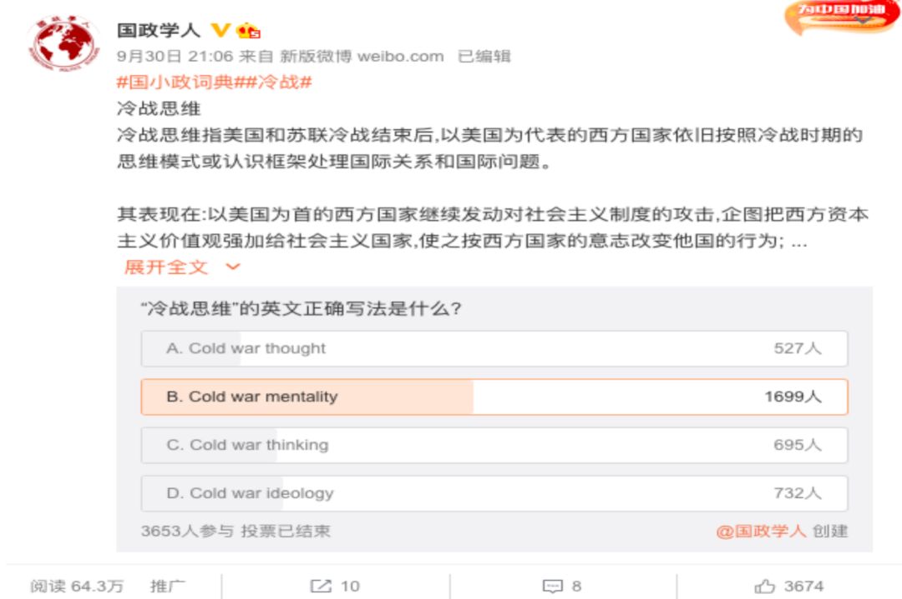
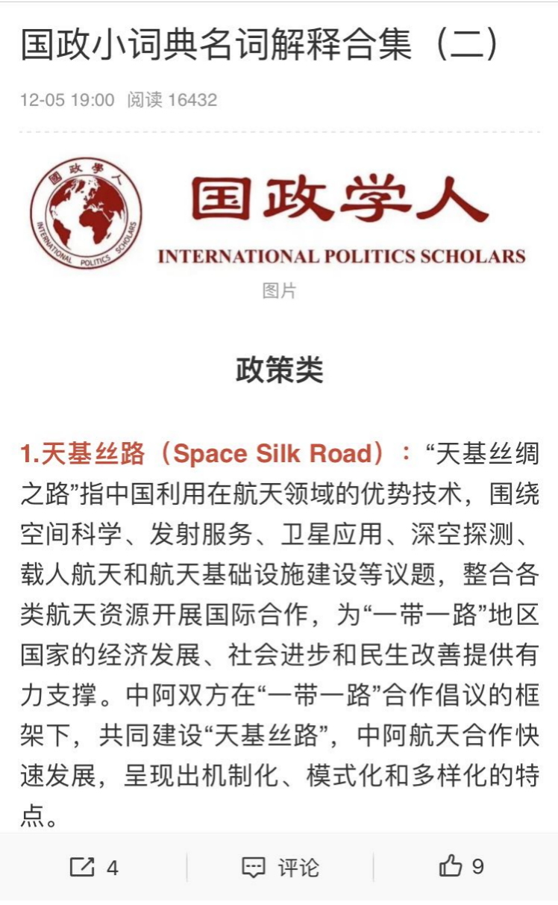

收录于合集

01
微博小分队之2021年国小政的微博播报
2021年，国小政在微博陪伴你度过了365天
你喜欢在吃饭时间刷国小政的微博
在吃饭的同时还在学习，你真棒！
你最爱在深夜睡前完成国小政与你的微博互动
不愧是“内卷之王”！
2021年，国小政发布了460条微博
获得3.0万个转评赞，总阅读量突破1354.3万次
感谢各位小伙伴对于国小政的支持
助力国小政向百万博主的目标进发
2021年，国小政参与了126次最热门话题的讨论
9月的一个夜晚，你刷到了国小政的微博
通过 #国小政词典#
你学会了“冷战思维”正确的英文写法
你的英文水平up！！！你的国关素养up！！！

10月份国际社会真是热闹
各种“瓜”让你眼花缭乱，不知从何吃起
没关系！因为你打开了国小政的微博
通过国小政整理的10月热点
你清楚地回顾了上月发生的国际大事
11月20日，你打开微博，参与了国小政提出的问题
选C！恭喜你成功击败近60%的参与投票的其他选手
获得国政小达人称号！！！
此后，你又通过每周更新的名词解释合集
巩固了自己的知识

你知道吗，你每次和国小政互动
都让小政好开心哦
正因为有你们
国小政喜获“人类高质量男性”称号（bushi）
国小政没有性别啦，每一个人都可以是 国政学人
总而言之，2021年，感谢大家对国政学人的陪伴
新的一年，也要相互指教哟
让我们一起成长为更好的国政学人！！！
02
视频小分队的2021年度播报
在2021年，国政学人的视频作品登上了微信、微博等多个平台
在各大平台上共获得了3.2万次的播放量
其中就有你的一份功劳哦！
你在追求知识的道路上勇往直前的同时
也有着一颗赤诚的爱国之心。
你观看最多的视频
也是国政学人2021年最受欢迎的视频是
《蚕食我国领土？印度在痴心妄想——完全解析中印边界争议》
在视频中，你与国小政一起学习了
中印边界问题的来龙去脉和本次
加勒万河谷冲突的始末
对中印边境问题有了基本了解的你
也对长期驻守在边疆的解放军边防战士们
更加肃然起敬
越发坚定了自己努力学习、报效祖国的信念！
展望未来，在2022年，国政学人视频组会在充分利用现有平台与内容的同时，积极拓展新领域，为大家带来更多兼具趣味性与知识性的视频。
——专业知识太无聊？ 趣味国关视频 马上安排！
——国际形势太复杂？ 相关领域的专家教授会亲自做客国政学人 ，为你带来针对国际热点的权威解读！
——视频太长难消化？国政学人未来将 精简视频内容 ，让你利用碎片时间就能成为国关小专家！
——什么？眼睛酸胀不想看视频？我们正计划登陆 音频平台 ，全方位服务渴望知识的你！
总之，新一年的国政学人新媒体小分队将为你带来更加丰富多彩的内容，准备好你的一键三连，同国政学人一起走向崭新的2022吧！
文案 | 倪小丫 高隆绪
美编 | 云琪布日
排版 | 陆霜滢

国政学人
支持学术公益与知识传播
微信扫一扫赞赏作者 __赞赏
已喜欢，对作者说句悄悄话
取消 __
发送给作者
发送
最多40字，当前共字
上一页 1/3 下一页
长按二维码向我转账
支持学术公益与知识传播
受苹果公司新规定影响，微信 iOS 版的赞赏功能被关闭，可通过二维码转账支持公众号。